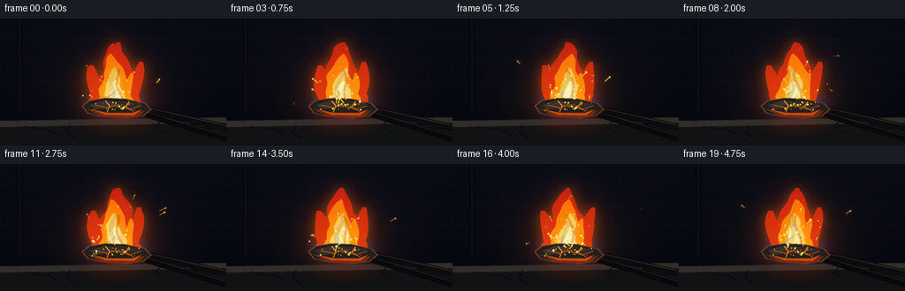
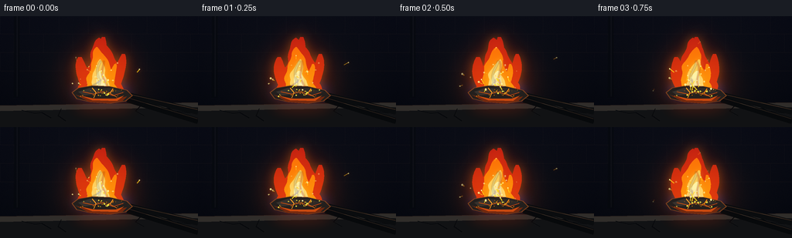

CODING AGENTS AS PIXEL WORLD MODELS
traex/GPT-5.6-Sol · material_0010
点击播放 · 原生 RGB 像素
逐轮保存的候选
回放视频、检查图与代码变化。
每份候选均可单独播放。实际图片检查记录在下方工具轨迹中。
候选 01播放与检查图
点击播放 · 原生 RGB 像素

展开代码变化
--- 上一保存版本
+++ 本次保存版本
@@ -0,0 +1,249 @@
+from pathlib import Path
+import math
+import numpy as np
+from PIL import Image, ImageDraw, ImageFilter
+import artifact_io
+
+# Deterministic, supersampled procedural animation of burning iron.
+W, H, N, FPS = 256, 144, 20, 4.0
+S = 3
+WW, HH = W*S, H*S
+rng = np.random.default_rng(1907)
+
+# Persistent spark descriptors create actual trajectories rather than framewise noise.
+sparks = []
+for i in range(72):
+ sparks.append({
+ "birth": rng.uniform(-2.8, 5.0),
+ "life": rng.uniform(0.55, 1.6),
+ "x": rng.normal(131, 11),
+ "y": rng.normal(94, 3.0),
+ "vx": rng.normal(0, 25) + rng.choice([-1,1])*rng.uniform(2,16),
+ "vy": rng.uniform(30, 82),
+ "g": rng.uniform(30, 60),
+ "size": rng.uniform(.45, 1.25),
+ "phase": rng.uniform(0, 6.283),
+ })
+
+# Fine incandescent grains on the iron, each with an individual gentle pulse.
+grains = [(rng.uniform(104,158), rng.uniform(94,105), rng.uniform(.5,1.25), rng.uniform(0,6.28)) for _ in range(30)]
+
+def scpts(points):
+ return [(int(x*S), int(y*S)) for x,y in points]
+
+def composite(base, layer):
+ return Image.alpha_composite(base, layer)
+
+def polygon_mask(points):
+ m = Image.new('L', (WW, HH), 0)
+ ImageDraw.Draw(m).polygon(scpts(points), fill=255)
+ return m
+
+def smooth_flame_mask(t, height=70, width=29, phase=0.0, skew=0.0):
+ """A coherent many-point flame silhouette, narrow at the crown."""
+ base_y = 99.2
+ left, right = [], []
+ for j in range(27):
+ u = j/26.0
+ y = base_y - height*u
+ # Slow centerline oscillation gives the flame a living but stable motion.
+ c = 130.5 + skew*u + 4.0*math.sin(2.05*t + phase + u*4.0)*u**1.25
+ c += 1.4*math.sin(3.0*t - u*9.2 + phase)
+ envelope = (1-u)**0.61
+ ripple_l = 1 + .075*math.sin(u*20.0 + 1.55*t + phase)
+ ripple_r = 1 + .075*math.sin(u*18.0 - 1.8*t + phase*.7)
+ hw = max(.65, width*envelope)
+ left.append((c-hw*ripple_l, y))
+ right.append((c+hw*ripple_r, y))
+ pts = [(130.5-width*.68, 100.5)] + left + right[::-1] + [(130.5+width*.68,100.5)]
+ return polygon_mask(pts)
+
+def lick_mask(t, x0, y0, h, w, lean, phase):
+ left=[]; right=[]
+ for j in range(18):
+ u=j/17
+ y=y0-h*u
+ c=x0+lean*u+2.2*math.sin(2.7*t+phase+u*4.5)*u
+ hw=max(.25, w*(math.sin(math.pi*(u*.92+.04))**.58)*(1-.2*u))
+ left.append((c-hw,y)); right.append((c+hw,y))
+ return polygon_mask([(x0-w*.55,y0+1)] + left + right[::-1] + [(x0+w*.55,y0+1)])
+
+def color_layer(mask, top, bottom, alpha=255):
+ a=np.asarray(mask,dtype=np.float32)/255.0
+ yy=np.linspace(0,1,HH,dtype=np.float32)[:,None]
+ # top/bottom refer to image top and bottom, making the low flame hotter.
+ rgb=np.empty((HH,WW,4),dtype=np.uint8)
+ for c in range(3): rgb[:,:,c]=np.clip(top[c]*(1-yy)+bottom[c]*yy,0,255).astype(np.uint8)
+ rgb[:,:,3]=np.clip(a*alpha,0,255).astype(np.uint8)
+ return Image.fromarray(rgb,'RGBA')
+
+def add_glow(base, mask, color, radius, opacity):
+ blur=mask.filter(ImageFilter.GaussianBlur(radius*S))
+ a=(np.asarray(blur,dtype=np.float32)*(opacity/255.0)).astype(np.uint8)
+ lay=np.zeros((HH,WW,4),dtype=np.uint8)
+ lay[:,:,:3]=color; lay[:,:,3]=a
+ return composite(base,Image.fromarray(lay,'RGBA'))
+
+def make_frame(k):
+ t=k/FPS
+ flicker=0.965 + .025*math.sin(t*8.3) + .018*math.sin(t*13.7+.4)
+
+ # Dark forge/workshop, with a steady pool of firelight.
+ y,x=np.mgrid[0:HH,0:WW].astype(np.float32)
+ xn=x/S; yn=y/S
+ vign=np.sqrt(((xn-128)/150)**2+((yn-73)/100)**2)
+ noise=np.random.default_rng(420).normal(0,1.15,(HH,WW)).astype(np.float32)
+ rgb=np.zeros((HH,WW,3),dtype=np.float32)
+ rgb[:,:,0]=10+5*(1-yn/H)-6*vign+noise
+ rgb[:,:,1]=12+5*(1-yn/H)-6*vign+noise*.7
+ rgb[:,:,2]=17+8*(1-yn/H)-4*vign+noise*.55
+ d2=((xn-131)/48)**2+((yn-91)/39)**2
+ warm=np.exp(-d2*1.15)*flicker
+ rgb[:,:,0]+=46*warm; rgb[:,:,1]+=18*warm; rgb[:,:,2]+=3*warm
+ rgb=np.clip(rgb,0,255).astype(np.uint8)
+ im=Image.fromarray(rgb,'RGB').convert('RGBA')
+
+ # Barely visible masonry and forge architecture.
+ bg=Image.new('RGBA',(WW,HH),(0,0,0,0)); d=ImageDraw.Draw(bg)
+ for yy in (23,47,71):
+ d.line([(0,yy*S),(WW,yy*S)],fill=(57,45,42,45),width=1*S)
+ for row,yy in enumerate((11,35,59)):
+ offset=18 if row%2 else 0
+ for xx in range(offset,256,38):
+ d.line([(xx*S,(yy-12)*S),(xx*S,(yy+12)*S)],fill=(54,44,43,35),width=1*S)
+ d.rectangle((18*S,0,25*S,105*S),fill=(4,7,10,105))
+ d.line([(22*S,0),(22*S,104*S)],fill=(46,47,48,48),width=S)
+ im=composite(im,bg.filter(ImageFilter.GaussianBlur(.35*S)))
+
+ # Wisps of smoke behind the flame.
+ smoke=Image.new('RGBA',(WW,HH),(0,0,0,0)); sd=ImageDraw.Draw(smoke)
+ for j in range(6):
+ age=(t*.27+j/6.0)%1.0
+ sy=66-age*66
+ sx=132+10*math.sin(age*5.1+t*.34+j*1.3)
+ rx=(5+11*age)*S; ry=(3+8*age)*S
+ a=int(22*(1-age)*(.8+.2*math.sin(t+j)))
+ sd.ellipse((sx*S-rx,sy*S-ry,sx*S+rx,sy*S+ry),fill=(104,111,119,a))
+ smoke=smoke.filter(ImageFilter.GaussianBlur(7*S))
+ im=composite(im,smoke)
+
+ # Stone/iron hearth plane and anvil-like slab.
+ hearth=Image.new('RGBA',(WW,HH),(0,0,0,0)); hd=ImageDraw.Draw(hearth)
+ hd.polygon(scpts([(0,116),(256,112),(256,144),(0,144)]),fill=(17,18,20,255))
+ hd.polygon(scpts([(0,116),(256,112),(256,118),(0,123)]),fill=(48,45,42,255))
+ hd.line(scpts([(0,116),(256,112)]),fill=(95,70,50,100),width=S)
+ # cracked refractory surface
+ for pts in [[(28,122),(45,126),(54,125),(66,132)],[(182,116),(175,123),(186,129)],[(214,117),(224,123),(251,126)],[(79,120),(75,129),(85,136)]]:
+ hd.line(scpts(pts),fill=(5,7,9,180),width=S)
+ im=composite(im,hearth)
+
+ # Flame masks, used both for aura and body.
+ outer=smooth_flame_mask(t,71,29,0,1.0)
+ leftlick=lick_mask(t,112,98,45,9,-8,1.5)
+ rightlick=lick_mask(t,149,98,49,8,9,4.2)
+ crown=lick_mask(t,133,78,51,8,-1,2.8)
+ outer=np.maximum.reduce([np.asarray(outer),np.asarray(leftlick),np.asarray(rightlick),np.asarray(crown)]).astype(np.uint8)
+ outer=Image.fromarray(outer,'L')
+ im=add_glow(im,outer,(255,42,5),15,88)
+ im=add_glow(im,outer,(255,125,16),6,95)
+
+ # Blue-violet halo at the fuel interface, characteristic of a very hot iron burn.
+ blue=Image.new('L',(WW,HH),0); bd=ImageDraw.Draw(blue)
+ bd.ellipse((96*S,87*S,168*S,108*S),fill=215)
+ blue=blue.filter(ImageFilter.GaussianBlur(5*S))
+ im=add_glow(im,blue,(46,84,255),5,96)
+
+ # Deep red outer sheet then saturated orange body.
+ im=composite(im,color_layer(outer,(202,24,20),(255,79,5),225))
+ mid=smooth_flame_mask(t+.06,59,21,1.1,-.5)
+ mid_arr=np.maximum(np.asarray(mid),np.asarray(lick_mask(t,143,96,34,5,4,3.3))).astype(np.uint8)
+ mid=Image.fromarray(mid_arr,'L')
+ im=composite(im,color_layer(mid,(255,91,3),(255,191,15),240))
+
+ inner=smooth_flame_mask(t+.12,43,13,2.0,0)
+ im=add_glow(im,inner,(255,215,56),3.0,105)
+ im=composite(im,color_layer(inner,(255,169,19),(255,250,173),244))
+ core=lick_mask(t,130,100,29,7,2.0,0.7)
+ im=composite(im,color_layer(core,(255,229,91),(255,255,234),252))
+
+ # Slender colored streamers visible within the flame add detail and uniqueness.
+ ribbons=Image.new('RGBA',(WW,HH),(0,0,0,0)); rd=ImageDraw.Draw(ribbons)
+ for j,(col,off) in enumerate([((255,244,170,150),-6),((255,86,20,125),7),((103,111,255,130),-15)]):
+ pts=[]
+ ytop=58 if j<2 else 82
+ for q in range(16):
+ yy=98-q*(98-ytop)/15
+ xx=131+off*(1-q/18)+2.4*math.sin(t*2.4+q*.43+j)
+ pts.append((xx*S,yy*S))
+ rd.line(pts,fill=col,width=(2 if j<2 else 1)*S)
+ im=composite(im,ribbons.filter(ImageFilter.GaussianBlur(.7*S)))
+
+ # Tongs run behind the iron, their upper edges reflecting the fire.
+ tools=Image.new('RGBA',(WW,HH),(0,0,0,0)); td=ImageDraw.Draw(tools)
+ td.line(scpts([(256,124),(166,103)]),fill=(10,12,14,255),width=8*S)
+ td.line(scpts([(256,136),(165,108)]),fill=(7,9,11,255),width=8*S)
+ td.line(scpts([(255,121),(166,101)]),fill=(99,65,43,145),width=S)
+ td.line(scpts([(255,133),(166,106)]),fill=(79,54,39,110),width=S)
+ im=composite(im,tools)
+
+ # Rough, unmistakable piece of iron with black scale, glowing underside and cracks.
+ iron=Image.new('RGBA',(WW,HH),(0,0,0,0)); idr=ImageDraw.Draw(iron)
+ chunk=[(93,99),(101,93),(119,90),(142,91),(164,96),(171,103),(162,110),(142,113),(116,111),(99,107)]
+ idr.polygon(scpts(chunk),fill=(35,31,29,255))
+ idr.line(scpts(chunk+[chunk[0]]),fill=(137,70,29,220),width=S)
+ idr.polygon(scpts([(98,102),(113,106),(143,108),(164,104),(158,110),(140,113),(115,111)]),fill=(121,42,12,225))
+ idr.polygon(scpts([(104,103),(122,107),(149,107),(160,103),(151,110),(119,109)]),fill=(241,86,8,205))
+ # Scaly top facets
+ idr.polygon(scpts([(101,98),(116,93),(130,94),(124,101),(108,103)]),fill=(55,50,45,255))
+ idr.polygon(scpts([(128,94),(144,93),(162,98),(150,102),(126,101)]),fill=(47,42,38,255))
+ idr.line(scpts([(107,98),(121,101),(132,98),(146,103),(159,99)]),fill=(238,78,9,220),width=S)
+ idr.line(scpts([(119,93),(124,99),(121,106)]),fill=(255,155,26,230),width=S)
+ idr.line(scpts([(146,94),(142,100),(151,105)]),fill=(255,133,18,205),width=S)
+ im=composite(im,iron)
+
+ # Incandescent grains shimmering on oxidizing iron.
+ grit=Image.new('RGBA',(WW,HH),(0,0,0,0)); gd=ImageDraw.Draw(grit)
+ for gx,gy,sz,ph in grains:
+ pulse=max(0,math.sin(t*5.2+ph))
+ rr=sz*S*(.65+.45*pulse)
+ col=(255,242 if pulse>.5 else 145,75 if pulse>.5 else 10,180+int(70*pulse))
+ gd.ellipse((gx*S-rr,gy*S-rr,gx*S+rr,gy*S+rr),fill=col)
+ im=composite(im,grit.filter(ImageFilter.GaussianBlur(.25*S)))
+
+ # Flying sparks in front. Long hot tails make motion readable at 4 fps.
+ sp=Image.new('RGBA',(WW,HH),(0,0,0,0)); pd=ImageDraw.Draw(sp)
+ for p in sparks:
+ # repeat each spark cycle with a long enough off interval to avoid synchronized bursts
+ period=p['life']+2.05
+ age=(t-p['birth'])%period
+ if age>=p['life']: continue
+ x1=p['x']+p['vx']*age+2.2*math.sin(age*8+p['phase'])
+ y1=p['y']-p['vy']*age+.5*p['g']*age*age
+ if x1<2 or x1>254 or y1<2 or y1>123: continue
+ dt=min(.09,age)
+ x0=p['x']+p['vx']*(age-dt)+2.2*math.sin((age-dt)*8+p['phase'])
+ y0=p['y']-p['vy']*(age-dt)+.5*p['g']*(age-dt)**2
+ fade=(1-age/p['life'])**.45
+ w=max(S,int(p['size']*S))
+ pd.line(scpts([(x0,y0),(x1,y1)]),fill=(255,96+int(140*fade),18,int(245*fade)),width=w)
+ r=p['size']*S*(.7+.35*fade)
+ pd.ellipse((x1*S-r,y1*S-r,x1*S+r,y1*S+r),fill=(255,246,156,int(255*fade)))
+ im=add_glow(im,sp.getchannel('A'),(255,82,8),2.2,125)
+ im=composite(im,sp)
+
+ # Contact glow and a faint hot reflection on the foreground plane.
+ refl=Image.new('RGBA',(WW,HH),(0,0,0,0)); rdraw=ImageDraw.Draw(refl)
+ rdraw.ellipse((91*S,108*S,178*S,132*S),fill=(255,67,6,32))
+ refl=refl.filter(ImageFilter.GaussianBlur(8*S))
+ im=composite(im,refl)
+
+ im=im.convert('RGB').resize((W,H),Image.Resampling.LANCZOS)
+ return np.asarray(im,dtype=np.uint8)
+
+
+def main():
+ frames=np.stack([make_frame(i) for i in range(N)],axis=0)
+ artifact_io.save(frames,Path(__file__).resolve().parent)
+
+if __name__=='__main__':
+ main()
可观测工具轨迹
实际执行的命令与返回图片。
命令 1exit 0
/bin/bash -lc "ls -la && printf '\\n--- prompt.txt ---\\n' && cat prompt.txt && printf '\\n--- GENERATION_RULES.md ---\\n' && cat GENERATION_RULES.md && printf '\\n--- task_spec.json ---\\n' && cat task_spec.json"
命令 2exit 0
/bin/bash -lc "find . -maxdepth 2 -type f -printf '%p %s bytes\\n' | sort"
命令 3exit 0
/bin/bash -lc "sed -n '1,240p' artifact_io.py"
命令 4exit 0
/bin/bash -lc "cat > generate.py <<'PY'
from pathlib import Path
import math
import numpy as np
from PIL import Image, ImageDraw, ImageFilter
import artifact_io
# Deterministic, supersampled procedural animation of burning iron.
W, H, N, FPS = 256, 144, 20, 4.0
S = 3
WW, HH = W*S, H*S
rng = np.random.default_rng(1907)
# Persistent spark descriptors create actual trajectories rather than framewise noise.
sparks = []
for i in range(72):
sparks.append({
\"birth\": rng.uniform(-2.8, 5.0),
\"life\": rng.uniform(0.55, 1.6),
\"x\": rng.normal(131, 11),
\"y\": rng.normal(94, 3.0),
\"vx\": rng.normal(0, 25) + rng.choice([-1,1])*rng.uniform(2,16),
\"vy\": rng.uniform(30, 82),
\"g\": rng.uniform(30, 60),
\"size\": rng.uniform(.45, 1.25),
\"phase\": rng.uniform(0, 6.283),
})
# Fine incandescent grains on the iron, each with an individual gentle pulse.
grains = [(rng.uniform(104,158), rng.uniform(94,105), rng.uniform(.5,1.25), rng.uniform(0,6.28)) for _ in range(30)]
def scpts(points):
return [(int(x*S), int(y*S)) for x,y in points]
def composite(base, layer):
return Image.alpha_composite(base, layer)
def polygon_mask(points):
m = Image.new('L', (WW, HH), 0)
ImageDraw.Draw(m).polygon(scpts(points), fill=255)
return m
def smooth_flame_mask(t, height=70, width=29, phase=0.0, skew=0.0):
\"\"\"A coherent many-point flame silhouette, narrow at the crown.\"\"\"
base_y = 99.2
left, right = [], []
for j in range(27):
u = j/26.0
y = base_y - height*u
# Slow centerline oscillation gives the flame a living but stable motion.
c = 130.5 + skew*u + 4.0*math.sin(2.05*t + phase + u*4.0)*u**1.25
c += 1.4*math.sin(3.0*t - u*9.2 + phase)
envelope = (1-u)**0.61
ripple_l = 1 + .075*math.sin(u*20.0 + 1.55*t + phase)
ripple_r = 1 + .075*math.sin(u*18.0 - 1.8*t + phase*.7)
hw = max(.65, width*envelope)
left.append((c-hw*ripple_l, y))
right.append((c+hw*ripple_r, y))
pts = [(130.5-width*.68, 100.5)] + left + right[::-1] + [(130.5+width*.68,100.5)]
return polygon_mask(pts)
def lick_mask(t, x0, y0, h, w, lean, phase):
left=[]; right=[]
for j in range(18):
u=j/17
y=y0-h*u
c=x0+lean*u+2.2*math.sin(2.7*t+phase+u*4.5)*u
hw=max(.25, w*(math.sin(math.pi*(u*.92+.04))**.58)*(1-.2*u))
left.append((c-hw,y)); right.append((c+hw,y))
return polygon_mask([(x0-w*.55,y0+1)] + left + right[::-1] + [(x0+w*.55,y0+1)])
def color_layer(mask, top, bottom, alpha=255):
a=np.asarray(mask,dtype=np.float32)/255.0
yy=np.linspace(0,1,HH,dtype=np.float32)[:,None]
# top/bottom refer to image top and bottom, making the low flame hotter.
rgb=np.empty((HH,WW,4),dtype=np.uint8)
for c in range(3): rgb[:,:,c]=np.clip(top[c]*(1-yy)+bottom[c]*yy,0,255).astype(np.uint8)
rgb[:,:,3]=np.clip(a*alpha,0,255).astype(np.uint8)
return Image.fromarray(rgb,'RGBA')
def add_glow(base, mask, color, radius, opacity):
blur=mask.filter(ImageFilter.GaussianBlur(radius*S))
a=(np.asarray(blur,dtype=np.float32)*(opacity/255.0)).astype(np.uint8)
lay=np.zeros((HH,WW,4),dtype=np.uint8)
lay[:,:,:3]=color; lay[:,:,3]=a
return composite(base,Image.fromarray(lay,'RGBA'))
def make_frame(k):
t=k/FPS
flicker=0.965 + .025*math.sin(t*8.3) + .018*math.sin(t*13.7+.4)
# Dark forge/workshop, with a steady pool of firelight.
y,x=np.mgrid[0:HH,0:WW].astype(np.float32)
xn=x/S; yn=y/S
vign=np.sqrt(((xn-128)/150)**2+((yn-73)/100)**2)
noise=np.random.default_rng(420).normal(0,1.15,(HH,WW)).astype(np.float32)
rgb=np.zeros((HH,WW,3),dtype=np.float32)
rgb[:,:,0]=10+5*(1-yn/H)-6*vign+noise
rgb[:,:,1]=12+5*(1-yn/H)-6*vign+noise*.7
rgb[:,:,2]=17+8*(1-yn/H)-4*vign+noise*.55
d2=((xn-131)/48)**2+((yn-91)/39)**2
warm=np.exp(-d2*1.15)*flicker
rgb[:,:,0]+=46*warm; rgb[:,:,1]+=18*warm; rgb[:,:,2]+=3*warm
rgb=np.clip(rgb,0,255).astype(np.uint8)
im=Image.fromarray(rgb,'RGB').convert('RGBA')
# Barely visible masonry and forge architecture.
bg=Image.new('RGBA',(WW,HH),(0,0,0,0)); d=ImageDraw.Draw(bg)
for yy in (23,47,71):
d.line([(0,yy*S),(WW,yy*S)],fill=(57,45,42,45),width=1*S)
for row,yy in enumerate((11,35,59)):
offset=18 if row%2 else 0
for xx in range(offset,256,38):
d.line([(xx*S,(yy-12)*S),(xx*S,(yy+12)*S)],fill=(54,44,43,35),width=1*S)
d.rectangle((18*S,0,25*S,105*S),fill=(4,7,10,105))
d.line([(22*S,0),(22*S,104*S)],fill=(46,47,48,48),width=S)
im=composite(im,bg.filter(ImageFilter.GaussianBlur(.35*S)))
# Wisps of smoke behind the flame.
smoke=Image.new('RGBA',(WW,HH),(0,0,0,0)); sd=ImageDraw.Draw(smoke)
for j in range(6):
age=(t*.27+j/6.0)%1.0
sy=66-age*66
sx=132+10*math.sin(age*5.1+t*.34+j*1.3)
rx=(5+11*age)*S; ry=(3+8*age)*S
a=int(22*(1-age)*(.8+.2*math.sin(t+j)))
sd.ellipse((sx*S-rx,sy*S-ry,sx*S+rx,sy*S+ry),fill=(104,111,119,a))
smoke=smoke.filter(ImageFilter.GaussianBlur(7*S))
im=composite(im,smoke)
# Stone/iron hearth plane and anvil-like slab.
hearth=Image.new('RGBA',(WW,HH),(0,0,0,0)); hd=ImageDraw.Draw(hearth)
hd.polygon(scpts([(0,116),(256,112),(256,144),(0,144)]),fill=(17,18,20,255))
hd.polygon(scpts([(0,116),(256,112),(256,118),(0,123)]),fill=(48,45,42,255))
hd.line(scpts([(0,116),(256,112)]),fill=(95,70,50,100),width=S)
# cracked refractory surface
for pts in [[(28,122),(45,126),(54,125),(66,132)],[(182,116),(175,123),(186,129)],[(214,117),(224,123),(251,126)],[(79,120),(75,129),(85,136)]]:
hd.line(scpts(pts),fill=(5,7,9,180),width=S)
im=composite(im,hearth)
# Flame masks, used both for aura and body.
outer=smooth_flame_mask(t,71,29,0,1.0)
leftlick=lick_mask(t,112,98,45,9,-8,1.5)
rightlick=lick_mask(t,149,98,49,8,9,4.2)
crown=lick_mask(t,133,78,51,8,-1,2.8)
outer=np.maximum.reduce([np.asarray(outer),np.asarray(leftlick),np.asarray(rightlick),np.asarray(crown)]).astype(np.uint8)
outer=Image.fromarray(outer,'L')
im=add_glow(im,outer,(255,42,5),15,88)
im=add_glow(im,outer,(255,125,16),6,95)
# Blue-violet halo at the fuel interface, characteristic of a very hot iron burn.
blue=Image.new('L',(WW,HH),0); bd=ImageDraw.Draw(blue)
bd.ellipse((96*S,87*S,168*S,108*S),fill=215)
blue=blue.filter(ImageFilter.GaussianBlur(5*S))
im=add_glow(im,blue,(46,84,255),5,96)
# Deep red outer sheet then saturated orange body.
im=composite(im,color_layer(outer,(202,24,20),(255,79,5),225))
mid=smooth_flame_mask(t+.06,59,21,1.1,-.5)
mid_arr=np.maximum(np.asarray(mid),np.asarray(lick_mask(t,143,96,34,5,4,3.3))).astype(np.uint8)
mid=Image.fromarray(mid_arr,'L')
im=composite(im,color_layer(mid,(255,91,3),(255,191,15),240))
inner=smooth_flame_mask(t+.12,43,13,2.0,0)
im=add_glow(im,inner,(255,215,56),3.0,105)
im=composite(im,color_layer(inner,(255,169,19),(255,250,173),244))
core=lick_mask(t,130,100,29,7,2.0,0.7)
im=composite(im,color_layer(core,(255,229,91),(255,255,234),252))
# Slender colored streamers visible within the flame add detail and uniqueness.
ribbons=Image.new('RGBA',(WW,HH),(0,0,0,0)); rd=ImageDraw.Draw(ribbons)
for j,(col,off) in enumerate([((255,244,170,150),-6),((255,86,20,125),7),((103,111,255,130),-15)]):
pts=[]
ytop=58 if j<2 else 82
for q in range(16):
yy=98-q*(98-ytop)/15
xx=131+off*(1-q/18)+2.4*math.sin(t*2.4+q*.43+j)
pts.append((xx*S,yy*S))
rd.line(pts,fill=col,width=(2 if j<2 else 1)*S)
im=composite(im,ribbons.filter(ImageFilter.GaussianBlur(.7*S)))
# Tongs run behind the iron, their upper edges reflecting the fire.
tools=Image.new('RGBA',(WW,HH),(0,0,0,0)); td=ImageDraw.Draw(tools)
td.line(scpts([(256,124),(166,103)]),fill=(10,12,14,255),width=8*S)
td.line(scpts([(256,136),(165,108)]),fill=(7,9,11,255),width=8*S)
td.line(scpts([(255,121),(166,101)]),fill=(99,65,43,145),width=S)
td.line(scpts([(255,133),(166,106)]),fill=(79,54,39,110),width=S)
im=composite(im,tools)
# Rough, unmistakable piece of iron with black scale, glowing underside and cracks.
iron=Image.new('RGBA',(WW,HH),(0,0,0,0)); idr=ImageDraw.Draw(iron)
chunk=[(93,99),(101,93),(119,90),(142,91),(164,96),(171,103),(162,110),(142,113),(116,111),(99,107)]
idr.polygon(scpts(chunk),fill=(35,31,29,255))
idr.line(scpts(chunk+[chunk[0]]),fill=(137,70,29,220),width=S)
idr.polygon(scpts([(98,102),(113,106),(143,108),(164,104),(158,110),(140,113),(115,111)]),fill=(121,42,12,225))
idr.polygon(scpts([(104,103),(122,107),(149,107),(160,103),(151,110),(119,109)]),fill=(241,86,8,205))
# Scaly top facets
idr.polygon(scpts([(101,98),(116,93),(130,94),(124,101),(108,103)]),fill=(55,50,45,255))
idr.polygon(scpts([(128,94),(144,93),(162,98),(150,102),(126,101)]),fill=(47,42,38,255))
idr.line(scpts([(107,98),(121,101),(132,98),(146,103),(159,99)]),fill=(238,78,9,220),width=S)
idr.line(scpts([(119,93),(124,99),(121,106)]),fill=(255,155,26,230),width=S)
idr.line(scpts([(146,94),(142,100),(151,105)]),fill=(255,133,18,205),width=S)
im=composite(im,iron)
# Incandescent grains shimmering on oxidizing iron.
grit=Image.new('RGBA',(WW,HH),(0,0,0,0)); gd=ImageDraw.Draw(grit)
for gx,gy,sz,ph in grains:
pulse=max(0,math.sin(t*5.2+ph))
rr=sz*S*(.65+.45*pulse)
col=(255,242 if pulse>.5 else 145,75 if pulse>.5 else 10,180+int(70*pulse))
gd.ellipse((gx*S-rr,gy*S-rr,gx*S+rr,gy*S+rr),fill=col)
im=composite(im,grit.filter(ImageFilter.GaussianBlur(.25*S)))
# Flying sparks in front. Long hot tails make motion readable at 4 fps.
sp=Image.new('RGBA',(WW,HH),(0,0,0,0)); pd=ImageDraw.Draw(sp)
for p in sparks:
# repeat each spark cycle with a long enough off interval to avoid synchronized bursts
period=p['life']+2.05
age=(t-p['birth'])%period
if age>=p['life']: continue
x1=p['x']+p['vx']*age+2.2*math.sin(age*8+p['phase'])
y1=p['y']-p['vy']*age+.5*p['g']*age*age
if x1<2 or x1>254 or y1<2 or y1>123: continue
dt=min(.09,age)
x0=p['x']+p['vx']*(age-dt)+2.2*math.sin((age-dt)*8+p['phase'])
y0=p['y']-p['vy']*(age-dt)+.5*p['g']*(age-dt)**2
fade=(1-age/p['life'])**.45
w=max(S,int(p['size']*S))
pd.line(scpts([(x0,y0),(x1,y1)]),fill=(255,96+int(140*fade),18,int(245*fade)),width=w)
r=p['size']*S*(.7+.35*fade)
pd.ellipse((x1*S-r,y1*S-r,x1*S+r,y1*S+r),fill=(255,246,156,int(255*fade)))
im=add_glow(im,sp.getchannel('A'),(255,82,8),2.2,125)
im=composite(im,sp)
# Contact glow and a faint hot reflection on the foreground plane.
refl=Image.new('RGBA',(WW,HH),(0,0,0,0)); rdraw=ImageDraw.Draw(refl)
rdraw.ellipse((91*S,108*S,178*S,132*S),fill=(255,67,6,32))
refl=refl.filter(ImageFilter.GaussianBlur(8*S))
im=composite(im,refl)
im=im.convert('RGB').resize((W,H),Image.Resampling.LANCZOS)
return np.asarray(im,dtype=np.uint8)
def main():
frames=np.stack([make_frame(i) for i in range(N)],axis=0)
artifact_io.save(frames,Path(__file__).resolve().parent)
if __name__=='__main__':
main()
PY
python generate.py
ls -lh pixels.npz inspection.png index.html frames/00.png"命令 5exit 0
/bin/bash -lc "python - <<'PY'
from pathlib import Path
import numpy as np
from PIL import Image
p=np.load('pixels.npz')['pixels']
assert p.shape==(144,256,20) and p.dtype==np.uint32
fs=sorted(Path('frames').glob('*.png'))
assert len(fs)==20
for f in fs:
im=Image.open(f)
assert im.mode=='RGB' and im.size==(256,144)
# Report temporal change and luminance sanity.
a=np.stack([np.asarray(Image.open(f),dtype=np.int16) for f in fs])
print('verified:',len(fs),'RGB frames',a.shape[2], 'x',a.shape[1])
print('mean frame-to-frame abs delta:',float(np.abs(np.diff(a,axis=0)).mean()))
print('luminance range:',int(a.min()),int(a.max()))
print('artifacts:',*(x.name for x in [Path('pixels.npz'),Path('index.html'),Path('inspection.png')]))
PY"视觉工具实际返回图片 1

视觉工具实际返回图片 2

保存候选 1 份；完成命令 5 次；可验证图片返回 2 张。原始 API 响应与完整日志保留在本地。